While quite complex compositions can be achieved using
+, |, and /, it may be necessary
to take even more control over the layout. All of this can be controlled
using the plot_layout() function along with a couple of
special placeholder objects. We’ll use our well-known mtcars plots to
show the different options.
library(ggplot2)
p1 <- ggplot(mtcars) +
geom_point(aes(mpg, disp)) +
ggtitle('Plot 1')
p2 <- ggplot(mtcars) +
geom_boxplot(aes(gear, disp, group = gear)) +
ggtitle('Plot 2')
p3 <- ggplot(mtcars) +
geom_point(aes(hp, wt, colour = mpg)) +
ggtitle('Plot 3')
p4 <- ggplot(mtcars) +
geom_bar(aes(gear)) +
facet_wrap(~cyl) +
ggtitle('Plot 4')Adding an empty area
Sometimes all that is needed is to have an empty area in between
plots. This can be done by adding a plot_spacer(). It will
occupy a grid cell in the same way a plot without any outer elements
(titles, ticks, strips, etc.):
p1 + plot_spacer() + p2 + plot_spacer() + p3 + plot_spacer()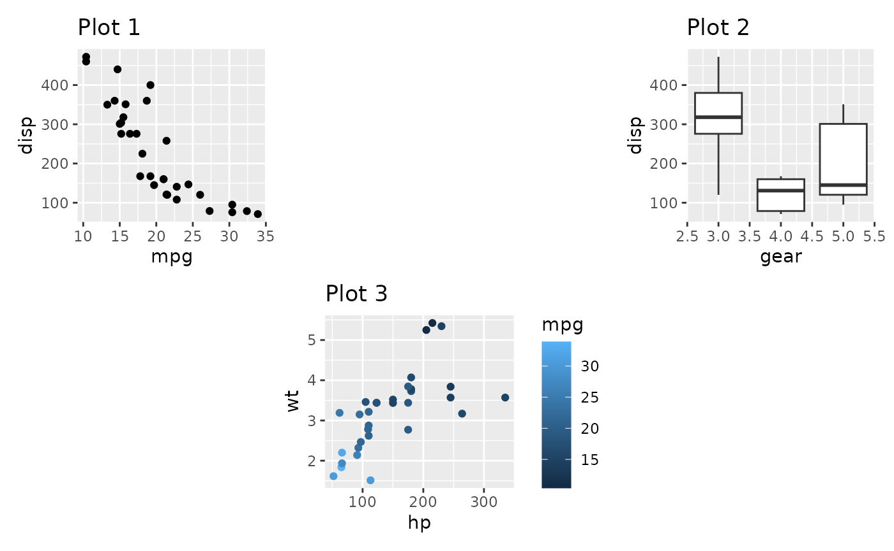
It is important to understand that the added area only corresponds to the size of a plot panel. This means that spacers in separate nesting levels may have different dimensions:
(p1 + plot_spacer() + p2) / (plot_spacer() + p3 + plot_spacer())Controlling the grid
If nothing is given, patchwork will try to make a grid as square as
possible, erring to the side of a horizontal grid if a square is not
possible (it uses the same heuristic as facet_wrap() in
ggplot2). Further, each column and row in the grid will take up the same
space. Both of these can be controlled with
plot_layout()
p1 + p2 + p3 + p4 +
plot_layout(ncol = 3)
p1 + p2 + p3 + p4 +
plot_layout(widths = c(2, 1))When grid sizes are given as a numeric, it will define the relative sizing of the panels. In the above, the panel area of the first column is twice that of the second column. It is also possible to supply a unit vector instead:
p1 + p2 + p3 + p4 +
plot_layout(widths = c(2, 1), heights = unit(c(5, 1), c('cm', 'null')))In the last example the first row will always occupy 5cm, while the second will expand to fill the remaining area.
It is important to remember that sizing only affects the plotting region (panel area). If a plot has, e.g., very wide y-axis text it will not be penalized and get a smaller overall plotting region.
Moving beyond the grid
Earlier, when we’ve wanted to create non-grid compositions, we’ve used nesting. While this is often enough, you end up losing the alignment between subplots from different nested areas. An alternative is to define a layout design to fill the plots into. Such a design can be defined in two different ways. The easiest is to use a textual representation:
layout <- "
##BBBB
AACCDD
##CCDD
"
p1 + p2 + p3 + p4 +
plot_layout(design = layout)When using the textual representation it is your responsibility to
make sure that each area is rectangular. The only exception is
# which denotes empty areas and can thus be of any
shape.
A more programmatic approach is to build up the layout using the
area() constructor. It is a bit more verbose but easier to
program with. Further, this allows you to overlay plots.
layout <- c(
area(t = 2, l = 1, b = 5, r = 4),
area(t = 1, l = 3, b = 3, r = 5)
)
p1 + p2 +
plot_layout(design = layout)The design specification can of course also be used with
widths and heights to specify the size of the
columns and rows in the design.
A small additional feature of the design argument exists
if used in conjunction with wrap_plots() function (See the
Plot Assembly guide). If the design is given
as a textual representation, you can name the plots to match them to the
different areas, instead of letting them be filled in in the order they
appear:
layout <- '
A#B
#C#
D#E
'
wrap_plots(D = p1, C = p2, B = p3, design = layout)Fixed aspect plots
A special case when it comes to assembling plots are when dealing
with fixed aspect plots, such as those created with
coord_fixed(), coord_polar(), and
coord_sf(). It is not possible to simultaneously assign
even dimensions and align fixed aspect plots. The default value for the
widths and heights arguments in
plot_layout() is NA, which is treated
specially. In general it will behave just as 1null
(i.e. expand to fill available space but share evenly with other
1null panels), but if the row/column is occupied by a fixed
aspect plot it will expand and contract in order to keep the aspect of
the plot and may thus not have the same dimension as grid width/heights
containing plots without fixed aspect plots. If you need to mix this
behavior with fixed dimensions you can use the special value of
-1null which behaves the same as NA (unit
vectors doesn’t allow NA values).
width = unit(c(1, 3, -1), c("null", "cm", "null") would
specify one column that fills out available space, one column fixed to 3
cm, and one column that expands to match a fixed aspect ratio if needed
or otherwise takes the same size as the first column.
p_fixed <- ggplot(mtcars) +
geom_point(aes(hp, disp)) +
ggtitle('Plot F') +
coord_fixed()
p_fixed + p1 + p2 + p3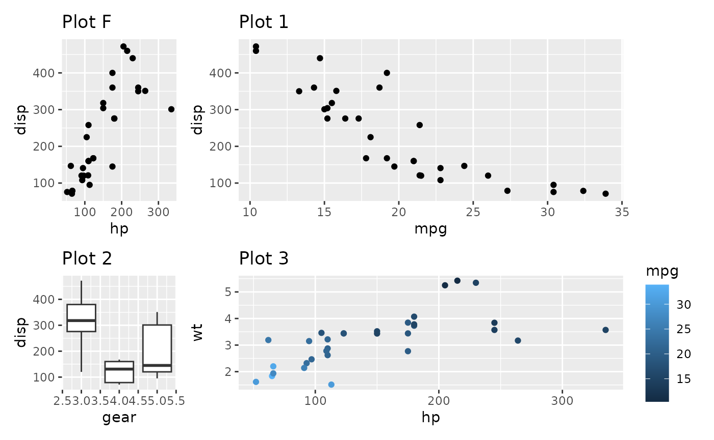
Contrast this with setting the widths to a non-NA value:
p_fixed + p1 + p2 + p3 + plot_layout(widths = 1)As you can see, the fixed aspect plot keeps its aspect ratio, but loses the axis alignment in one of the directions. Which solution is needed is probably dependent on the specific use case. The default optimizes the use of space.
There are some restrictions to the space optimization. The fixed aspect plot cannot take up multiple rows or columns, and if one fixed aspect plot conflicts with another one, one of them will end up not using the full space.
Avoiding alignment
Patchwork is designed to do it’s utmost to align the plotting areas,
and while this is generally sensible in order to create a calm and good
looking layout it sometimes gets in the way of creating what you want.
Below we will see two such cases. In both situation the answer is the
wrap_elements() function.
Huge axis text causing white space.
Sometimes one of the plots has much longer axis text or axis labels than the other:
p2mod <- p2 + labs(x = "This is such a long\nand important label that\nit has to span many lines")
p1 | p2mod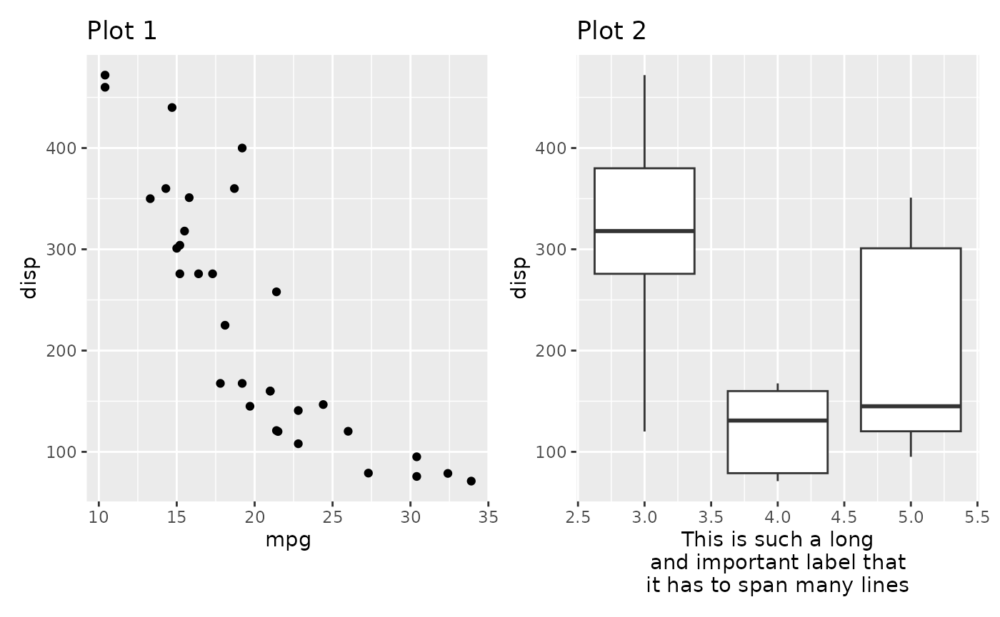
Depending on what you prefer you might want the leftmost plot to fill
out as much room as possible instead of being aligned to the rightmost
panel. Putting a ggplot or a patchwork inside free()
removes any alignment from the plot.
free(p1) | p2mod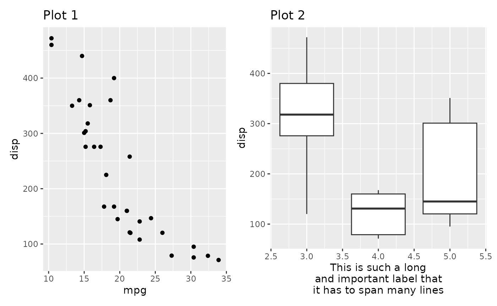
Designs don’t keep an even width
When creating a complex layout using a design you may create setups where plots spans the edge of other plots and be surprised how that affects the width of the panels in the design:
design <- "#AAAA#
#AAAA#
BBCCDD
EEFFGG"
p3 + p2 + p1 + p4 + p4 + p1 + p2 +
plot_layout(design = design)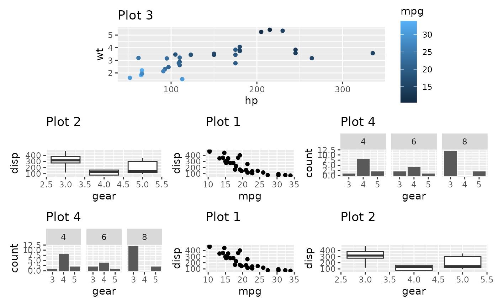
In the above we see that the 3 bottom columns all have different
widths despite being given the same amount of space in the design
matrix. The reason for this is that the top plot has a y-axis to the
left and a guide to the right, and those fall in between the two columns
that make up the 1st and 3rd column in the bottom. Subsequently those
plots are expanded to fill out the space. Once again free()
will save us from this:
free(p3) + p2 + p1 + p4 + p4 + p1 + p2 +
plot_layout(design = design)Insets
An alternative to placing plots in a grid is to place a plot as an
inset in another plot. As we saw above, this is achievable with a
setting up a layout with multiple overlapping area()
specifications. However, this approach still uses an underlying grid,
which may be constraining. Another approach is to use the
inset_element() function which marks a plot or graphic
object to be placed as an inset on the previous plot. It will thus not
take up a slot in the provided layout, but share the slot with the
previous plot. inset_element() allows you to freely
position your inset relative to either the panel, plot, or full area of
the previous plot, by specifying the location of the left, bottom,
right, and top edge of the inset.
p1 + inset_element(p2, left = 0.6, bottom = 0.6, right = 1, top = 1)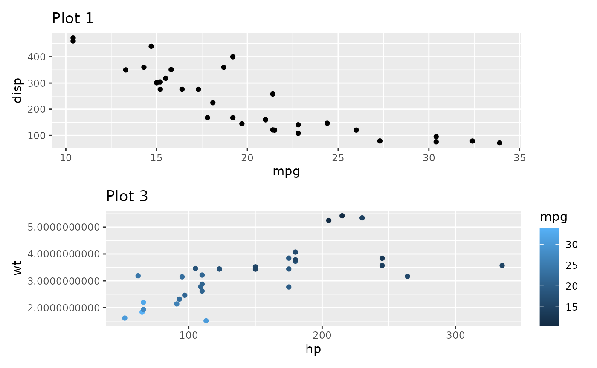
p1 + inset_element(p2, left = 0, bottom = 0.6, right = 0.4, top = 1, align_to = 'full')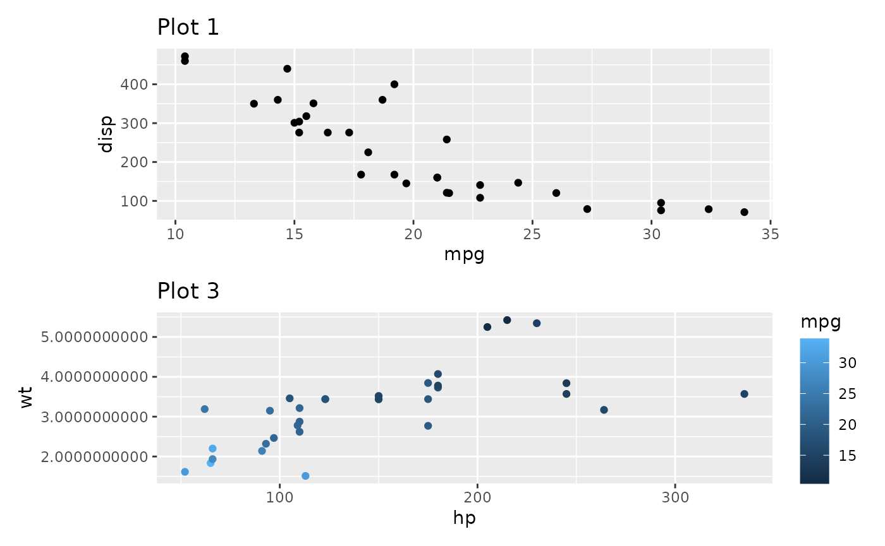
The location can be specified either as numerics like above or as
grid units. If specified as numerics they will be converted to
'npc' units which goes from 0 to 1 in the specified area.
As an example of this we will place an inset exactly 1 cm from the panel
border in the code below:
p1 + inset_element(
p2,
left = 0.5,
bottom = 0.5,
right = unit(1, 'npc') - unit(1, 'cm'),
top = unit(1, 'npc') - unit(1, 'cm')
)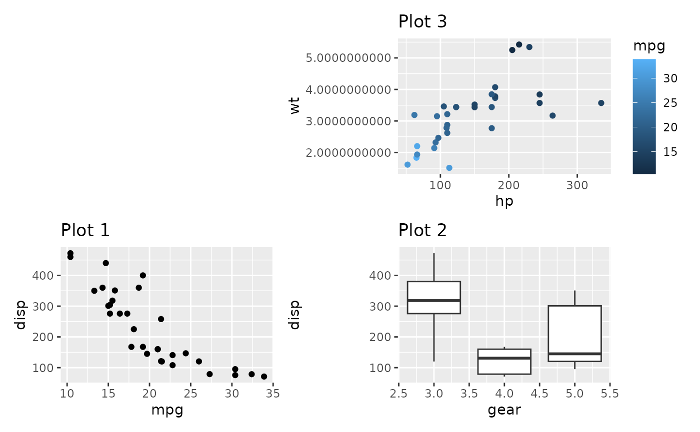
Further, inset_element() allows you to place the inset
below the previous plot, should you choose to, and controlling clipping
and tagging in the same way as wrap_elements().
p3 + inset_element(p1, left = 0.5, bottom = 0, right = 1, top = 0.5,
on_top = FALSE, align_to = 'full')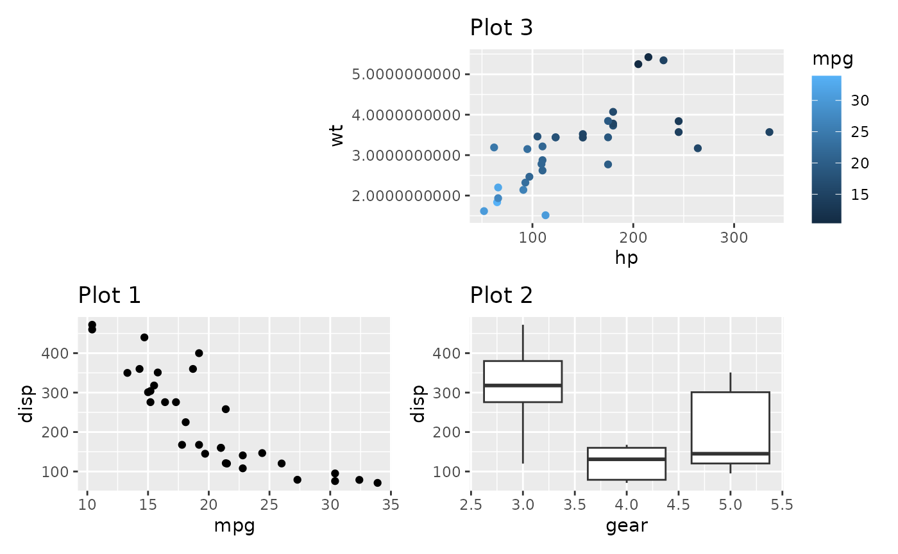
Controlling guides
Plots often have guides to help viewers deduce the aesthetic mapping.
When composing plots we need to think about what to do about these. The
default behavior is to leave these alone and simply let them follow the
plot around. Examples of this can be seen above where the color guide is
always positioned beside Plot 3. Such behavior is fine if the purpose is
simply to position a bunch of otherwise unrelated plots next to each
other. If the purpose of the composition is to create a new tightly
coupled visualization, the presence of guides in between the plots can
be jarring, though. The plot_layout() function provides a
guides argument that controls how guides should be treated.
To show how it works, let’s see what happens if we set it to
'collect':
p1 + p2 + p3 + p4 +
plot_layout(guides = 'collect')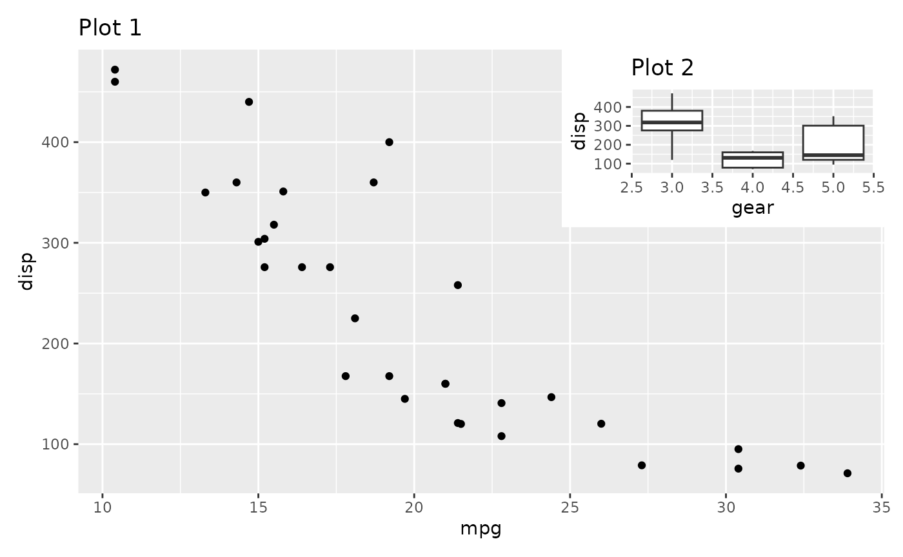
We can see that the guide has been hoisted up and placed beside all
the plots. The alternative to 'collect' is
'keep', which makes sure that guides are kept next to their
plot. The default value is 'auto', which is sort of in
between. It will not collect guides, but if the patchwork is nested
inside another patchwork and that patchwork collect guides, it is
allowed to hoist them up. To see this in effect, compare the two
plots:
((p2 / p3 + plot_layout(guides = 'auto')) | p1) + plot_layout(guides = 'collect')
((p2 / p3 + plot_layout(guides = 'keep')) | p1) + plot_layout(guides = 'collect')The guide collection has another trick up its sleeve. If multiple plots provide the same guide, you don’t want to have it show up multiple times. When collecting guides it will compare them with each other and remove duplicates.
p1a <- ggplot(mtcars) +
geom_point(aes(mpg, disp, colour = mpg, size = wt)) +
ggtitle('Plot 1a')
p1a | (p2 / p3)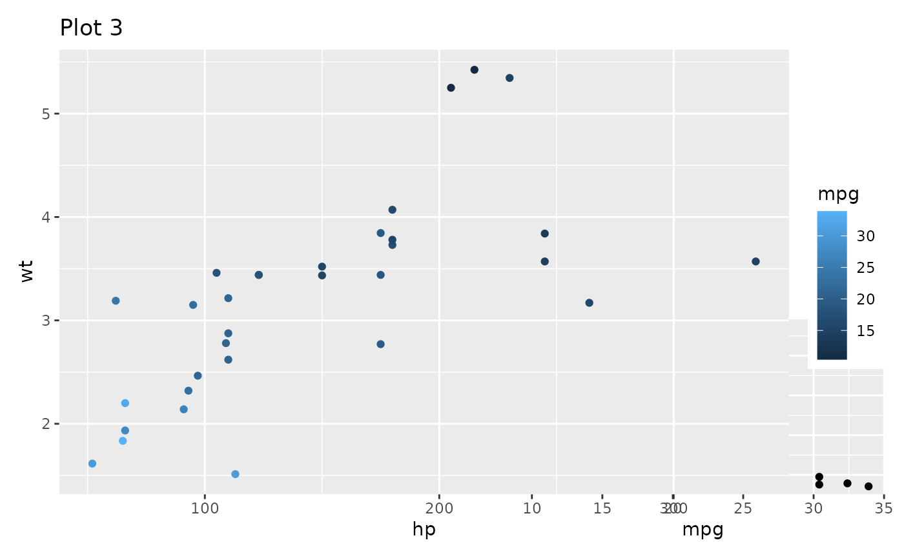
(p1a | (p2 / p3)) + plot_layout(guides = 'collect')Guides are compared by their graphical representation, not by their declarative specification. This means that different theming among plots may mean that two guides showing the same information is not merged.
Now and then you end up with an empty area in you grid. Instead of
leaving it empty, you can specify it as a place to put the collected
guides, using the guide_area() placeholder. It works much
the same as plot_spacer(), and if guides are not collected
it will do exactly the same. But if guides are collected they will be
placed there instead of where the theme tells it to.
p1 + p2 + p3 + guide_area() +
plot_layout(guides = 'collect')Guide areas are only accessible on the same nesting level. If a nested patchwork has a guide area it will not be possible to place guides collected at a higher level there.
Controlling Axes
Much like the legends above, axes can sometimes be shared between
plots. However, this only makes sense if the plots are positioned
besides each other on top of having the exact same axis. patchwork
provides two arguments to plot_layout() for controlling
axes and they work much like the guides argument except
they don’t allow recursing into nested patchworks (for obvious
reasons).
In the plot below the y-axis is redundant and could be kept to the side like we are used to from faceted plots:
p1 + p2
This is easily fixed with the axes argument
p1 + p2 + plot_layout(axes = "collect")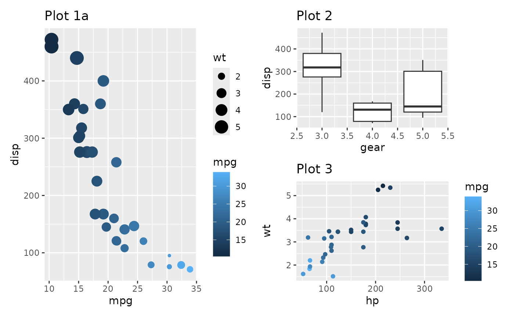
By default the axis title follows the collecting setting for the axis. We could also only collect the titles
p1 + p2 + plot_layout(axis_titles = "collect")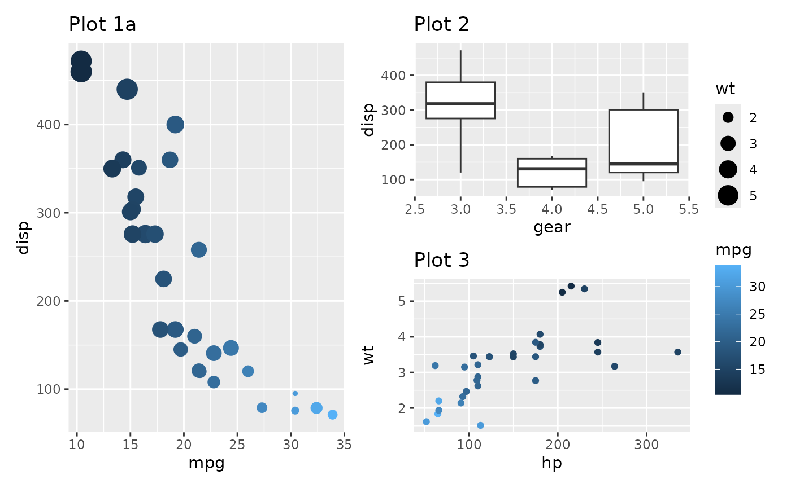
This makes a lot of sense if the axes doesn’t match exactly but still share the same title. Further, title collecting also work in the other direction:
p1 / p2 + plot_layout(axis_titles = "collect")In the above we see that the y-axis title now only appears once and is positioned centrally.
Want more?
This is all for layouts. There is still more to patchwork. Explore the other guides to learn about annotations, special operators and multipage alignment.